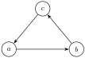
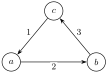
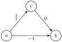
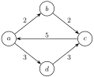
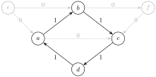
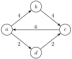
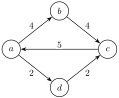
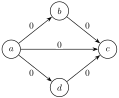
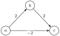

Let \(T_{1}: U \to V\) and \(T_{2}: U \to V\) be linear transformations. Define \(T: U \to V^{2}\) by \(T(\vec{u}) = (T_{1}(\vec{u}), T_{2}(\vec{u}))\text{.}\) Then \(T\) is a linear transformation.
Flow Rida
Section 1
Checkpoint 1.1.
Section 2 Graphs
A directed graph is a finite collection of nodes \(N\) and arrows between nodes \(E \subseteq N \times N\text{.}\)

We are interested in weighted directed graphs, which additionally have a function \(w: E \to \mathbb{R}\) giving a weight to each edge.


Today we are going to model having water or electricity or Amazon packages flow through a graph. There is a key property such a flow has. At any node of the network the total weight of what comes in must equal the total weight of what comes out.
The in-flow at a node \(n\) of a graph is the sum of weights of all edges going into \(n\text{,}\) and we denote it \(\text{in-flow}(n)\text{.}\) The \(\text{out-flow}(n)\) is the sum of weights of edges going out. A weighting of a directed graph is called a circulation if in-flow is equal to out-flow at all vertices of the graph.

For a graph \(G = (N,E)\text{,}\) we let \(\mathbb{R}^{E}\) denote the set of weightings of the edges of \(G\text{.}\)
Theorem 2.4.
Let \(G = (N,E)\) be a directed graph. The set of \(\vec{w} \in \mathbb{R}^{E}\) for which \(\vec{w}\) is a circulation is a linear subspace of \(\mathbb{R}^{E}\text{.}\)
Proof.
For each node \(v \in N\text{,}\) define a linear transformation \(T_v:\mathbb{R}^{E}\to\mathbb{R}\) by \(T_v(\vec{w})=\text{in-flow}(v)-\text{out-flow}(v)\text{.}\) Define \(T:\mathbb{R}^{E}\to\mathbb{R}^{N}\) by \(T(\vec{w})=(T_v(\vec{w}))_{v\in N}\text{.}\) By definition, a weighting of the edges \(\vec{w} \in \mathbb{R}^{E}\) is a circulation if and only if \(T_v(\vec{w}) = 0\) for all \(v \in N\text{.}\) Thus, the circulations are exactly \(\ker(T)\text{.}\)
Unlike my freestyle rapping, when we talk about graphs, one cannot have negative flow. Thus, we will only concern ourselves with edge weights that are all non-negative. Thus, the set of non-negative circulations is \(\ker(T) \cap \mathbb{R}^{E}_{\geq 0}\text{.}\)
The indicator vector of a subset \(S\) of edges of a graph is \(\chi_{S}\text{,}\) defined by \(\chi_{S}(e) = 1\) if \(e \in S\) and \(0\) otherwise. A cycle in a graph is a path that starts and ends at the same point and does not repeat any vertex other than its start.

Lemma 2.6.
The indicator vector of any cycle is a circulation.
Proof.
Consider a vertex of a cycle. Then it has one incoming edge of the cycle and one outgoing edge of the cycle. Thus, the net flow is \(0\) at each vertex, so it is a circulation.
We call the support of a weighting \(\vec{w}\) \(\operatorname{supp}(\vec{w}) = \{e \in E: \vec{w}_{e} \neq 0\}\text{,}\) the set of edges with nonzero weight. It turns out that the support of any non-negative circulation must contain a cycle.
Lemma 2.7.
Let \(G = (N,E)\) be a directed graph. Let \(\vec{w} \in \mathbb{R}^{E}\) be a non-negative circulation. Then if \(\operatorname{supp}(\vec{w}) \neq \emptyset\text{,}\) it contains a cycle.
Proof.
Let \(S \subseteq N\) be the set of vertices of \(N\) with an incoming edge of positive weight. Since \(\operatorname{supp}(\vec{w}) \neq \emptyset\text{,}\) there exists at least one vertex with an incoming edge of positive weight, meaning that \(S \neq \emptyset\text{.}\)
Let \(v \in S\text{.}\) Then the in-flow of \(v\) is positive, so by flow conservation, the out-flow must also be positive. Therefore, it must have an outgoing edge of positive weight. Furthermore, the vertex reached by moving along that edge must also be in \(S\text{,}\) as it has an incoming edge of positive weight.
Then one can generate a path in the graph starting at a vertex in \(S\) and always choosing an outgoing edge of positive weight. Since the graph is finite, this path will eventually reach a vertex that has already been seen and thus contain a cycle.
In fact, a stronger property holds: the indicator vectors of cycles play an analogous role to a basis for non-negative circulations.
Theorem 2.8.
Let \(G = (N,E)\) be a directed graph. Let \(\vec{w} \in \mathbb{R}^{E}\text{.}\) Then \(\vec{w}\) is a non-negative circulation if and only if it is a non-negative linear combination of indicator vectors of cycles.
Proof.
By Lemma 2.6, any indicator vector of a cycle is a circulation. Furthermore, the set of circulations is a linear subspace, so any linear combination is a circulation. Any non-negative linear combination of non-negative circulations will similarly be a non-negative circulation. Therefore, any non-negative linear combination of indicator vectors of cycles is a non-negative circulation.
For the other direction, let \(\vec{w} \in \mathbb{R}^{E}\) be a non-negative circulation. Then by Lemma 2.7, its support contains a cycle \(C\text{.}\) Take \(\vec{w} - t\chi_{C}\text{,}\) where \(t\) is the minimum weight of any edge on that cycle. Then \(\vec{w} - t\chi_{C}\) is still a non-negative circulation but has at least one fewer nonzero-weight edge. Repeating this at most \(|E|\) times yields
\begin{equation*}
\vec{w} - \sum_{i=1}^{k} t_{i} \chi_{C_{i}} = \vec{0}
\end{equation*}
for some \(t_{i} > 0\) and cycles \(C_{1},\dots,C_{k}\text{.}\) Thus,
\begin{equation*}
\vec{w} = \sum_{i=1}^{k} t_{i} \chi_{C_{i}}
\end{equation*}
and is therefore a non-negative linear combination of indicator vectors of cycles.
Section 3 Exercises
Checkpoint 3.1.
Consider the following weighted directed graphs. Which weightings are non-negative circulations?




Let \(W \subseteq \mathbb{R}^{n}\) be a linear subspace, and consider \(W_{\geq 0} = W \cap \mathbb{R}^{n}_{\geq 0}\text{.}\) An elementary vector \(\vec{w} \in W_{\geq 0}\setminus\{\vec{0}\}\) is a nonzero vector that is support minimal in the sense that there does not exist a nonzero vector \(\vec{u} \in W_{\geq 0}\) such that \(\operatorname{supp}(\vec{u}) \subsetneq \operatorname{supp}(\vec{w})\text{.}\)
Checkpoint 3.3.
Let \(W \subseteq \mathbb{R}^{n}\) be a linear subspace and \(W_{\geq 0} = W \cap \mathbb{R}_{\geq 0}^{n}\text{.}\)
-
Show that the support of any nonzero vector in \(W_{\geq 0}\) contains the support of some elementary vector.
-
Show that, for any nonzero vector \(\vec{v} \in W_{\geq 0}\text{,}\) there exists an elementary vector \(\vec{u} \in W_{\geq 0}\) such that \(\vec{v} - \vec{u} \in W_{\geq 0}\) and \(\operatorname{supp}(\vec{v} - \vec{u}) \subsetneq \operatorname{supp}(\vec{v})\text{.}\)
-
Show that \(W_{\geq 0}\) is the set of non-negative linear combinations of its elementary vectors.